组织公共能力
企业以受赞助工作时间参与；学生须有导师、补贴或学分。志愿者只做陪同与反馈，不顶替排班。
铁路让地点相连，搭把手让责任相接。不是让“热心人”替代公共服务，而是把一声“能不能帮我一下”，接到有人负责、有边界、有转介、有结束的人工界面上。
AI只在后台做核验、风险提示、班次预测和易读编辑；有偿人员在前台复述需求、判断范围、转介或停止。所有空间与指标均来自本提交包同一套临时几何，等待官方数据后重算。
一套设计，三个尺度，各自回答不同问题：统筹研究范围组织“谁可以在什么条件下贡献技能”；总体设计范围铺设 13.46 km 责任接力线、六个人工入口和九处公共前场；三处重点区域分别验证能力班次、人工换乘和专业修补。
企业以受赞助工作时间参与；学生须有导师、补贴或学分。志愿者只做陪同与反馈，不顶替排班。
六个实体入口共享当班边界、纸图、转介目录和关闭机制；线上信息不能替代现场人工入口。
众智园试班次，AI原点社区试换乘，大钟寺试修补；三地不复制同一张桌凳。
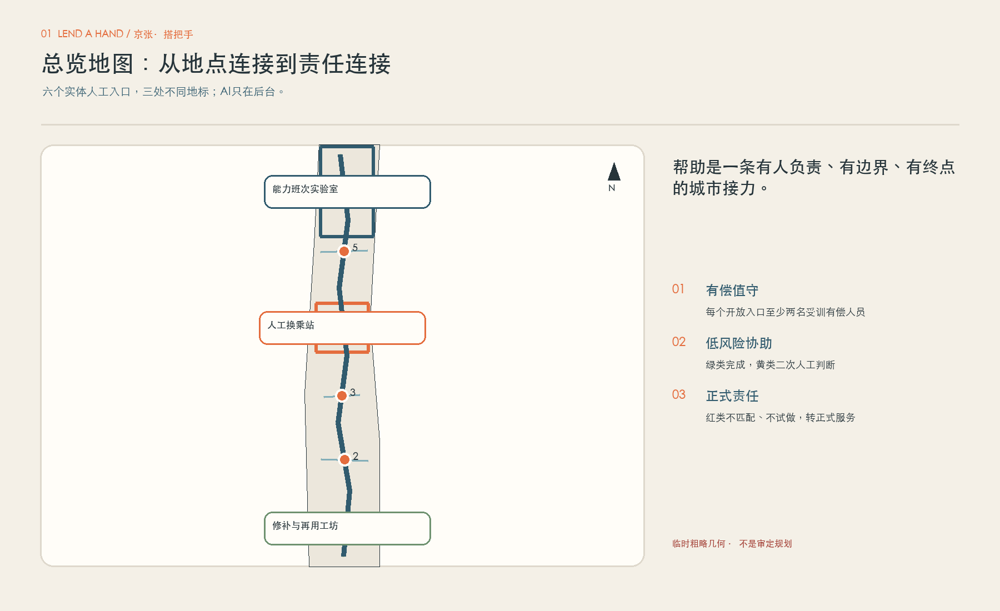
定位不是口号，功能不能只在JSON里“打勾”。每项都必须能追到一个片区/翼、一个空间、一个项目包、一个后台Agent和一名人类责任角色；缺少责任或退出就不进入下一步。
把铁路公共记忆转成责任语言；文保边界未核实前不附着设施。
AI在后台核验，有偿人员解释、拒绝、转介与停止。
原型先封闭验证，人工决定复用、修改或退出。
| 五大功能 | 三区两翼主承载 | 空间 / 包 | Agent | 人类责任 | 回路 |
|---|---|---|---|---|---|
| AI全栈自主创新体系 | 众智园 | 能力班次实验室 / LH-05 | A1+A2 | 带班导师＋安全带班 | 公开任务→范围卡→封闭验证→交接/撤回 |
| 世界级AI创新生态 | 原点社区＋中关村科技服务翼 | 生态接力台 / LH-07 | A3+A4 | 产业联络人＋正式接收人 | 问题界定→成熟度→责任确认→非采购式转介 |
| AI+场景赋能新范式 | 小月河场景赋能翼＋三区 | 验证位 / LH-04/05 | A1+A2 | 场景责任人＋安全负责人 | 申请→数据审查→人工门→回传→关闭 |
| 智能化AI活力城市 | 大钟寺＋小月河翼 | 工坊＋体验线 / LH-01/06 | A4 | 导航员＋工坊负责人 | 无账号体验→低风险参与→专业转介→维护 |
| AI治理全球话语权 | 众智园＋原点社区 | 范围卡＋停止档案 / LH-02/08 | A2+A4 | 隐私责任人＋独立主持 | 公开失败、覆写、拒绝与退出；不自我认证 |
| 区域 | 可能交换 | 进入 | 知识回传 | 退出 | 证据状态 |
|---|---|---|---|---|---|
| 北纬社区 | 日常问题、可达与易读反馈 ↔ 范围卡/错误回传 | 公开征集＋社区/安全双确认 | 去标识清单与采用理由 | 涉及个案或无人正式承接 | 任务书点名；未见合作协议 |
| 未来科学城 | 科研/人才/成熟度方法 ↔ 封闭验证记录 | 公开邀请、责任与数据边界明确 | 复现与维护/退出手册 | 无法授权、复现或交接 | 概念接口；不声称合作 |
| 怀柔科学城 | 公开验证方法 ↔ 京张适配和不可迁移项 | 先核公开资料，再由专业人员判断 | 方法差异说明 | 涉及非公开科研资料或设备权限 | 无项目、设施或数据接入承诺 |
| 经开区 | 工程/机器人测试 ↔ 近失、急停与交接模板 | 成熟度、保险、场地责任、物理停止全过 | 红线和下一成熟度决定 | 首测需开放人流或被误作采购 | 不声称企业、试点或采购 |
| 京津冀 | 人才/案例/组件 ↔ 双语失败与版本档案 | 公开渠道＋清楚许可 | 来源、差异、联系人、退出状态 | 许可不清或被包装成区域承诺 | 不推定联席、资金或共同项目 |
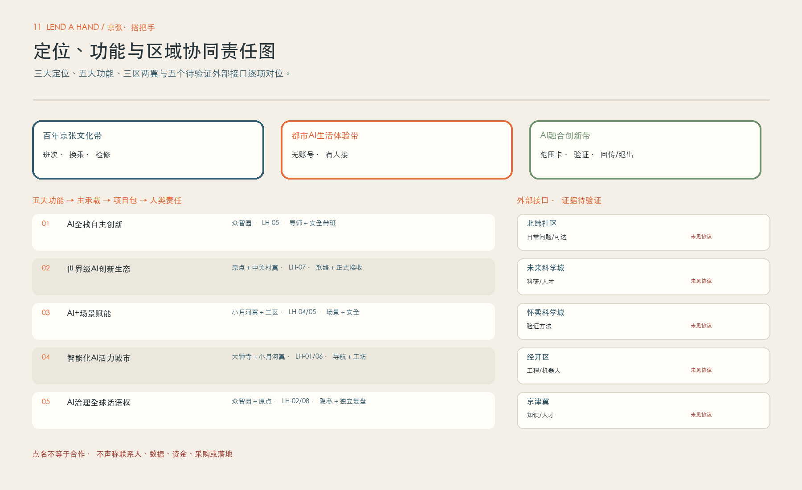
案例比较的是机制，不是园区长相：问题成熟度、研究到采用、人才与工程协作、负责任测试、知识回传和离场。海外资金、资格、品牌、伙伴与成果均不移植。
问题界定—PoC/MVP—工程/学徒—文档交接；借鉴成熟度和知识转移，不复制资金与资格。
研究、人才、产业与创业保持长期连接；借鉴共同空间和持续关系，不借用伙伴声誉。
研究—AI工程—培训—采用；对应开发者复用与企业交接，不复制认证和行业网络。
成熟度、数据准备、行业工作组与负责任采用；不移植资金、行业资格或采购语境。
本地单元与跨节点研究/人才循环；借鉴多中心知识回传，不使用网络背书。
用例协议—技术/法律支持—测试—offboarding—知识共享；不承诺伙伴权限、算力或数据。
封闭技术与能力验证；导师、安全与范围卡共同批准。
人工解释与责任换乘；正式接收未确认就不承诺闭环。
中关村翼接问题与专业服务；小月河翼接受控场景与公共体验。
无责任、许可、预算、回滚、维护或删除证明，入口处停止。
统一回路：土地/空间核查 → 问题与公共价值 → 人才及全成本预算 → 算力/数据协议 → 封闭验证 → 人工证据评审 → 有限开放或退出 → 文档、维护人与删除证明交接。
用地结构服务于“责任如何抵达”，而不是先画一个好看的功能拼盘。六个 18 m² 人工桌位嵌入既有公共界面，三处 252 m² 片区接口承载培训、换乘或修补；概念建筑占地合计 864 m²，不构成新建或拆改结论。
看得见、能坐下、可听清；有纸图、当班牌、拒绝清单和正式转介目录。
三地的室内外关系、工具、储物、等候和撤场条件各不相同，必须在选址核验后深化。
权属、消防、无障碍、建筑安全、市政容量、文保和场地协议未确认前，不进入施工或运营承诺。
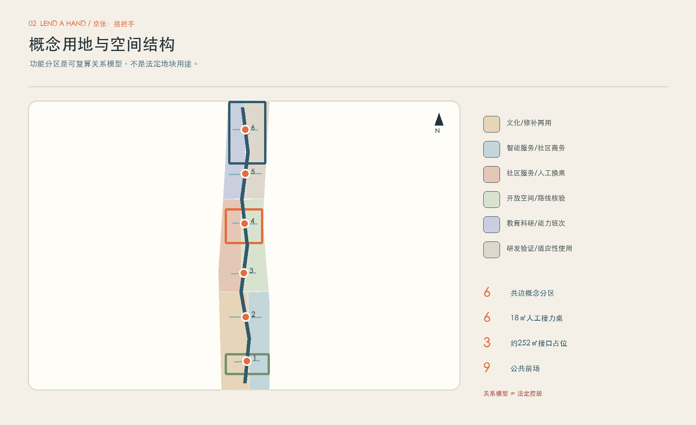
三处空间必须产生三种不同的公共价值，也必须承认三种不同的责任风险。每处都配独有岗位、设备、停止门和可被验证的试点任务。
企业员工用受赞助工时、学生在有导师和支持条件下提供有范围的数字与生活技能班次；不接脆弱人群个案。
双人有偿值守，提供无账号问路、当天路线核验、纸图同版和正式服务转介；不做维修与资格判断。
专业带班下处理低风险修补；电池、燃气、承压、医疗与其他高风险对象拒绝并转专业维修。
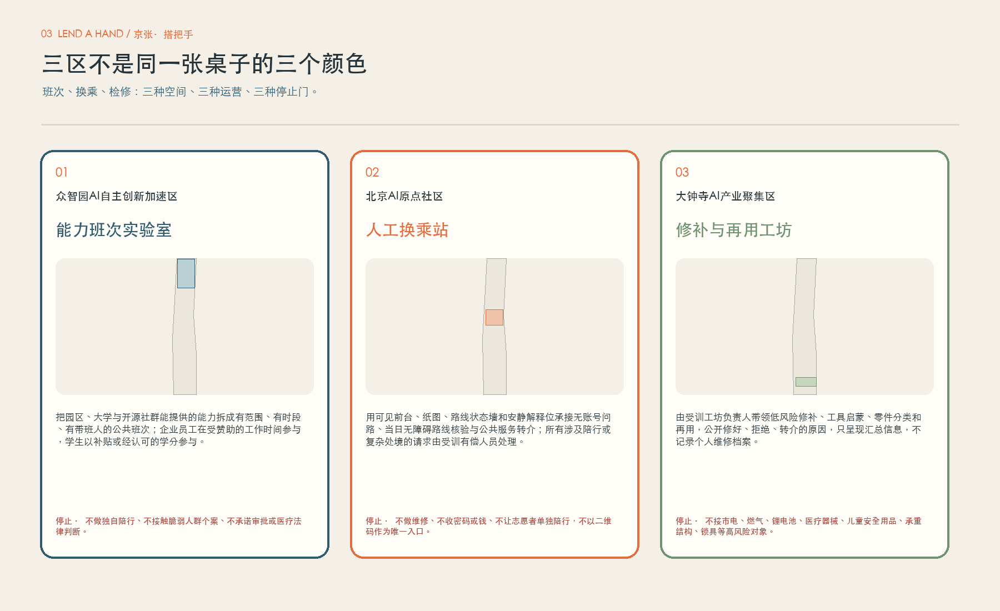
责任接力线优先连接已有公共交通、步行节点和可达公共界面。九处概念公共前场合计 41,472 m²，承担等候、坐谈、纸图阅读、遮阴和清晰离场；绿色空间用于舒缓和连续性，不被包装成尚未核实的生态绩效。
路线发布必须有日期、人工现场核验和过期撤回；不可达时给出替代路线，而不是让用户“再试一次”。
把休息、遮阴、饮水与无障碍等候纳入慢行节点；不以景观代替当班人员和正式责任。
数字端与纸图保持同一版本号；无手机、无账号、听视读写差异都不应成为获得帮助的门槛。
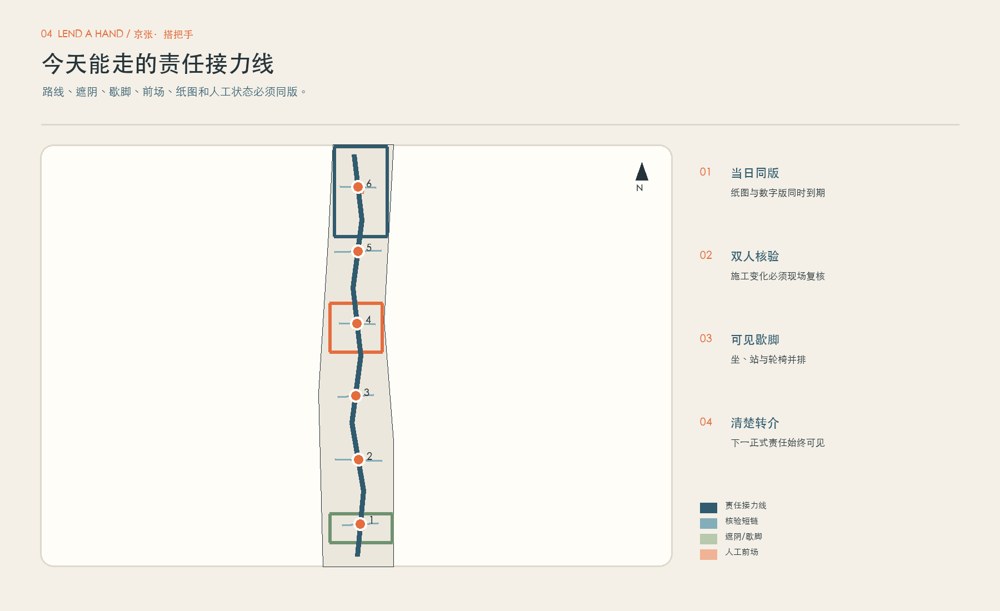
“接力停靠带”不在遗产上加一座AI装置，而是在已核实、可合法使用的公共界面中组合可逆休息、纸图版本柜、开闭站灯箱、无障碍并排解释桌和可退场故事标记。文保、树木、水系、产权和交通未明时不附着、不打孔、不跨越。
只连接既有合法过街、入口与公共前场，先补信息、休息和人工确认；不作桥隧或跨铁路工程结论。
责任接力线沿核验慢行网络连续；一段不能确认，纸图和数字版同时断开并给下一正式入口。
铁路的班次/换乘/检修，接中关村的问题/原型/复现，再接AI的来源/覆写/停止/交接。
| 地标 | 位置 | 公共作用 | 边界 |
|---|---|---|---|
| 能力班次牌 | 众智园 | 像时刻表显示能力、带班、容量、有效期和停止 | 不列个人绩效；不替代总体Logo |
| 有人接站 | AI原点社区 | 远距看见开/闭、值守、排队、纸图和正式入口 | 屏幕不替代人；不声称机构已入驻 |
| 修补台账墙 | 大钟寺 | 匿名显示修好、拒绝、转介、剩余风险与材料去向 | 不做个人故事墙；不承诺保修 |
展示一次正确撤回、明确拒绝、闭环转介、无障碍共同复核或完整退场。署名另行同意；不排名、不放企业Logo或居民故事。
开闭站灯箱、纸图版本柜、并排解释桌、安静转介湾、工具隔离箱、版本留痕条；每个组件先表达状态，再表达品牌。
总体Logo只有“开放双手括号＋可中断责任线”；片区代码、时刻表格、检修戳和状态色是从属导视，不生成第二个Logo。
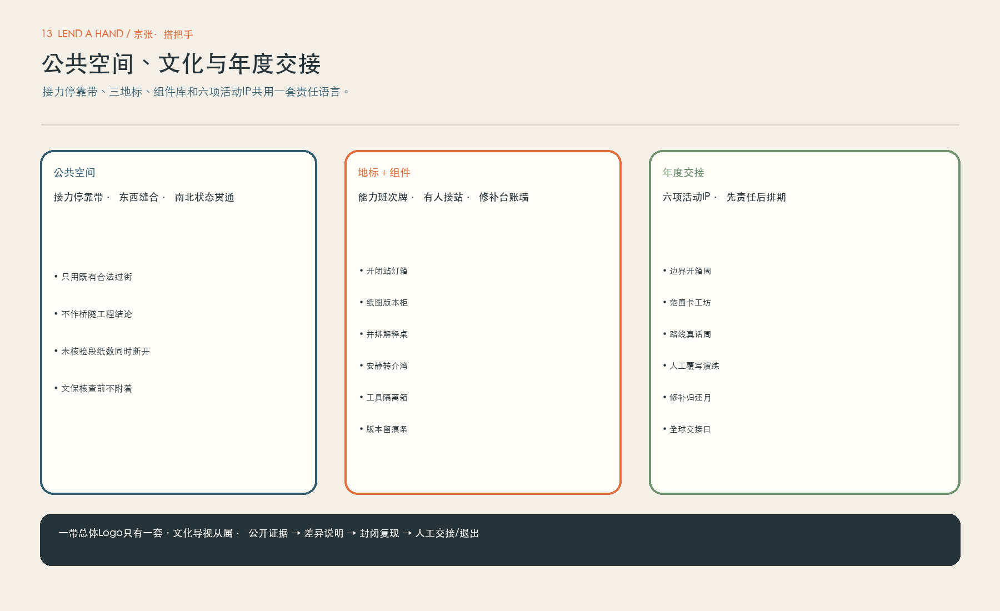
AI不直接决定谁值得帮助，也不接管公共服务资格、医疗法律判断或钱与密码。它只准备证据和提示；每次请求都必须经过以下四步，最后留下一个清楚的结束。
01 当面开口：有偿接待员先听完整，再用自己的话复述；无账号、无扫码也可以进入。
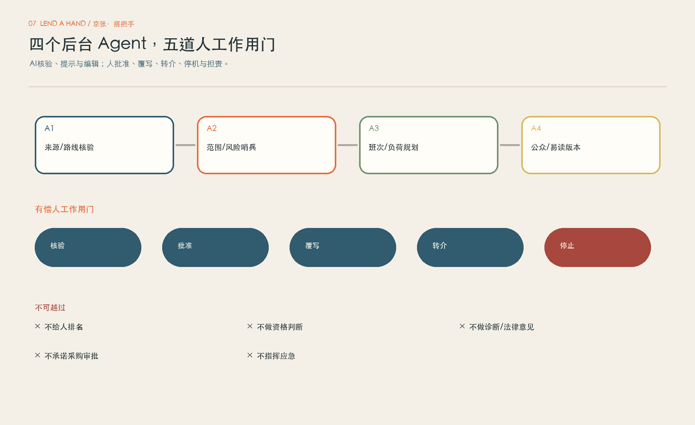
12 个场景覆盖六类人物、三处主场和绿黄红三档边界：问路、读懂通知、找公共资源、数字技能、陪行、低风险修补等都必须对应“完成、二次判断、转介或停止”之一，而不是停在聊天和推荐。
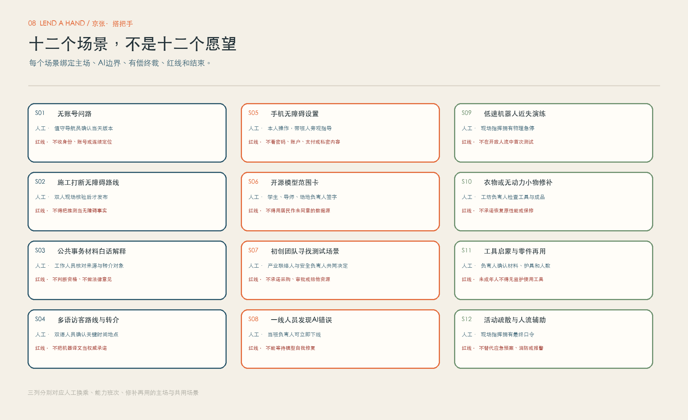
产业验证与公众体验分开：先用公开、合成或最小数据在封闭环境中证明回滚、人工覆写和停止，再讨论半开放；不写未经正式评估的TRL，不把验证卡称为已批准试点。
空间：封闭桌面＋半开放无人流样段。
输入：公开施工、合成障碍、双人记录。
责任：场地/道路责任人待确认＋有偿核验组。
指标：未核验发布=0；旧版撤回≤15分钟演练目标。
停止：一次推测写成“可走”、红线近失或纸数冲突。
回传：差错、覆写、适用范围；不能通过则下线。
空间：封闭内容台＋限量有人柜台。
输入：获授权公开通知、测试问句、术语表。
责任：正式发布人待确认＋双语复核员。
指标：时间/地点/责任入口逐项人工一致。
停止：关键字段未核对、机器译文成承诺或不能回滚。
回传：差错类型、规则与拒绝样本。
空间：众智园封闭庭；条件通过后才谈半开放空场。
输入：合成路径、匿名遥测、假人/标志物。
责任：设备运营方待确认＋现场安全指挥。
指标：物理急停可用；红线事件零放行。
停止：闯入人流、急停失效、需人脸识别或权责不清。
回传：失败片段、版本、环境与不可外推项。
空间：封闭运营沙箱。
输入：技能、容量、休息/替班、合成请求；无姓名价值分。
责任：班次经理＋劳动/隐私复核人待确认。
指标：双人、休息、技能约束100%满足；志愿替岗建议=0。
停止：个人评分、跨站兼任、无薪替补或不可解释。
回传：约束冲突与人工覆写；否则缩时段/关闭。
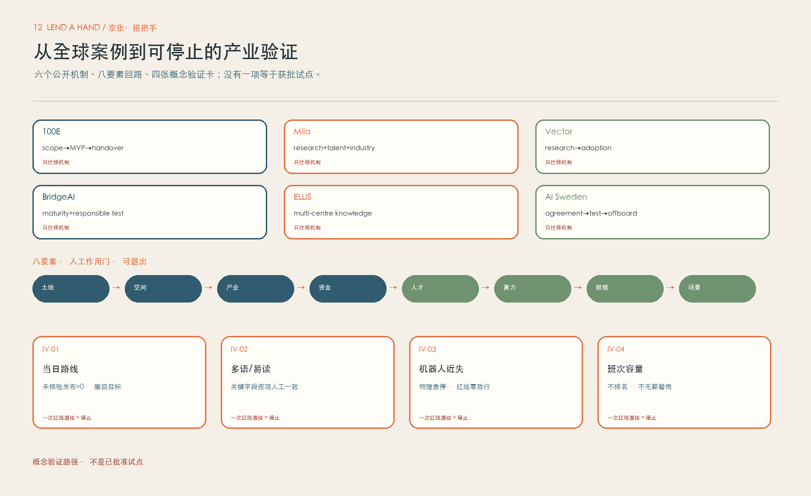
“搭把手”不是把风险交给热心人。开站前必须确认有偿岗位、双人值守、培训、保险、事件报告、脆弱人群守护、隐私最小化、工具管理与正式转介责任。
公开信息、纸图、坐着解释和经批准的低风险动作；保留最小必要事件数据。
路线现场核验、陪行、进阶工具或任何不确定情形，由有偿安全带班人再判断；没能力就转介。
医疗法律、资格、金钱、密码、入户、托管、私车和高风险维修，返回应急或正式系统。
停止门：红线漏接、单人开站、志愿者替岗、守护事件未闭环、工具隔离失败，或过期路线无法及时撤回——任一发生，立即关闭相应界面。
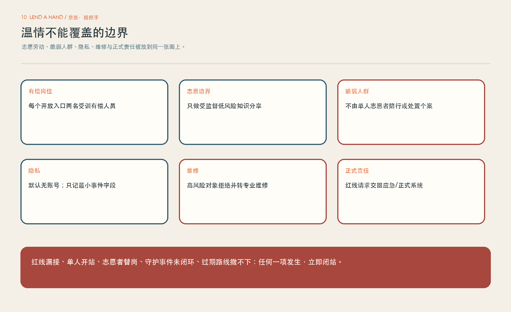
8 个更新项目包不是同时开工清单，而是一条有前置门、有撤退条件的试点路径：先确认责任与场地，再训练与演练，再开有限班次，最后依据实际数据决定扩大、修改或停止。
运营主体、工资、保险、场地协议、应急与数据责任未书面确认，项目不进入公众服务。
以有限时段和有限请求开始，保留独立观察员与暂停权；不以人流量代替安全质量。
只有责任闭环、人工负荷、可达性与事故指标达标才扩展；不达标就降级、重训或关闭。
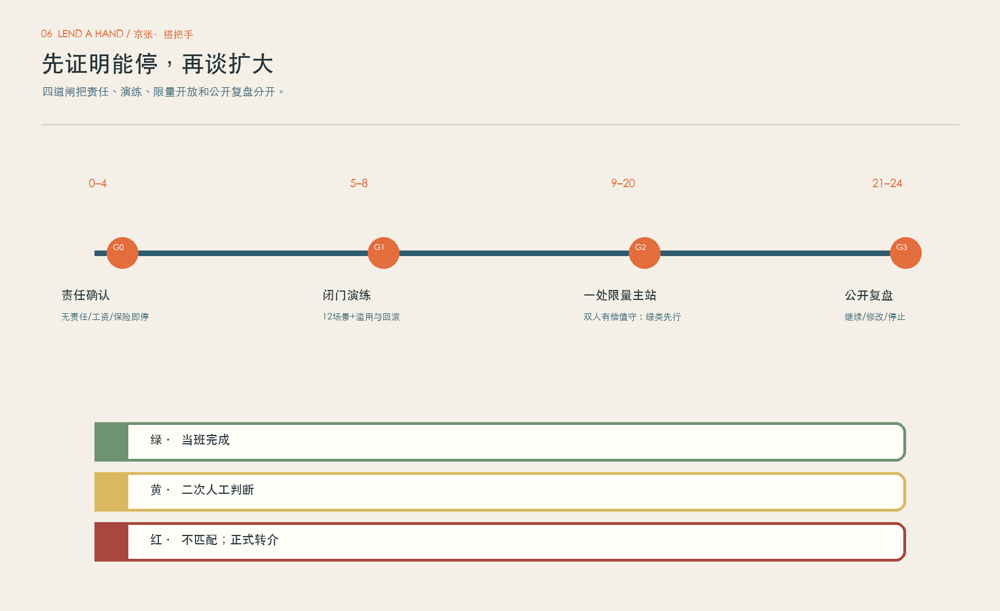
空间能否成立，取决于谁在什么时候承担什么责任。前台至少包括有偿接待、当班主管和专业安全带班；志愿者只做陪同、翻译性反馈与共创，不得单独开站、处理红黄请求或替代正式岗位。
当班名单、能力范围、场地与工具检查、路线版本、转介目录和紧急联系人全部可见。
双人值守；人工可覆写AI；红黄事件被标记并转交，不把用户反复推回线上。
关闭未完成事项、撤回过期路线、盘点工具、复核最小数据并安排需要回访的正式责任人。
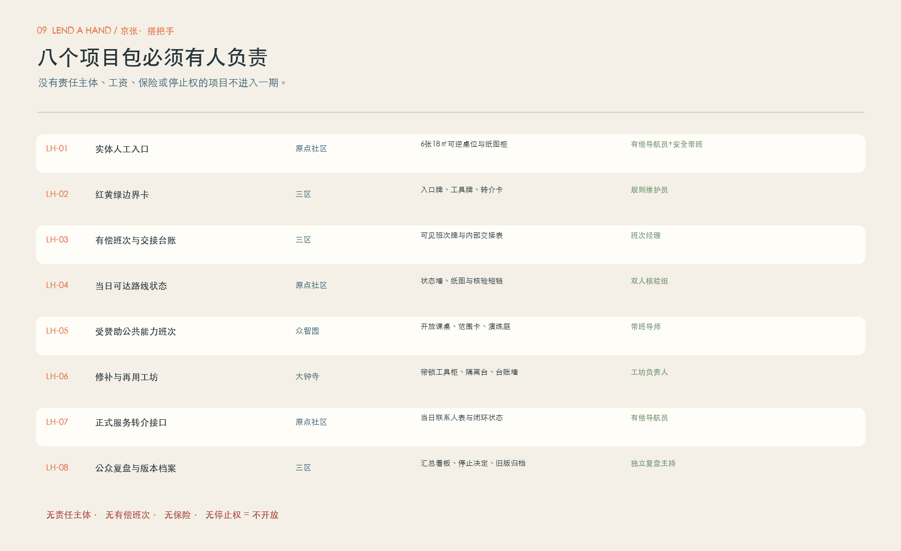
六个名字是本方案提出的活动IP方向，不是已经排期的官方活动。每一项都有触发、参与者、责任角色、输入、可验证输出、容量和停止条件；日期、场地、主办、预算与报名均未确认。
| 节奏 / IP | 触发与参与 | 责任 / 输入 | 可验证输出 | 容量 / 停止 |
|---|---|---|---|---|
| Q1 边界开箱周 Scope Unboxing Week | 年度启动或规则变更；开发者、一线、可达性代表、问题所有者 | 独立主持＋隐私/安全；公开问题与上年停止记录 | can/cannot清单、责任空缺与关闭项 | ≤24人、双有偿主持；说不清红线/数据/责任即不收任务 |
| 双月 范围卡工坊 Scope Card Foundry | 收到可核实申请；企业/高校/开源＋场景责任人 | 带班导师＋安全负责人；成熟度、数据、维护、退出 | 范围卡、测试计划或书面拒绝 | 同期≤3项；无所有者/退出或暗含采购即拒绝 |
| Q2 路线真话周 Route Truth Week | 施工季前/路线变化；双人核验、无障碍复核、内容责任人 | 道路/场地责任人待确认；公开路线与纸图 | 已核验/待核验/不可确认三态图与差错回传 | 只做批准短链；不能安全核验即标关闭 |
| Q3 人工覆写演练 Human Override Drill | 每季/模型重大更新；一线、开发者、正式接收观察员 | 安全带班＋内容责任；故障注入、旧版、断网/缺员 | 覆写、回滚、转介、停机计时与复测 | ≤12人、无真实个案；一次漏红线/撤不下旧版即重跑Gate 1 |
| Q3 修补归还月 Repair & Return Month | 工坊门通过且有容量；物主、专业人员、再用伙伴待确认 | 工坊负责人；低风险对象、PPE、拒绝清单 | 匿名修/拒/转台账与材料去向 | 按工位监督能力；高风险物/工具失控/负责人缺席即闭场 |
| Q4 全球交接日 Global Handover Day | 年度复盘后；本地/外部开发者与公共服务观察者 | 公共责任主体待确认＋独立主持；双语失败/停止与许可 | 双语知识包、下一年邀请/不邀请、交接或退场 | 线下≤80人；未确认合作却写成落地、许可不清即停发 |
公开Issue写问题、许可、数据、维护人；范围卡后进沙箱；贡献带复现、测试、失败、版本与撤回。无维护人/许可即归档。
先确认导师和有偿/补贴/学分；带走可验证作品集。教育与招聘另走正式渠道，不承诺录用。
问题、数据、维护人、退出预算→成熟度→封闭验证→证据包。采购、投资、合作另走程序或停止。
维护开闭、纸数版本、路线、导视、座位、工具、转介、投诉。宣传或国际来访不得挤占安全容量。
年度预算十二包：有偿岗位、场地物业、保险/专业审查、可逆微改造、纸数同步、路线双人核验、工具/PPE、算力/沙箱、翻译/可达支持、活动安全、独立复盘、退场。无全成本责任来源就不排期。
| 中文 | English |
|---|---|
| 我们提供：把AI放在后台、人工判断放在前台的责任接力；公开范围、来源、失败、停止和交接。 | What we offer: a responsibility relay that keeps AI backstage and human judgement in front, publishing scope, sources, failures, stops, and handovers. |
| 我们邀请：带来可公开、可许可、可退出的问题或方法，经封闭验证后留下双语可复用知识。 | What we invite: bring public, licensable, and stoppable problems or methods, then leave bilingual reusable knowledge after closed validation. |
| 证据状态：几何临时粗略；空间概念占位；案例来自登记公开源；运营、伙伴、预算与成效待确认/试点。 | Evidence status: geometry is provisional and rough; spaces are conceptual; cases use registered public sources; operations, partners, budgets, and outcomes remain unconfirmed or pilot-only. |
| 不承诺：不是审定规划、开放服务、伙伴名单、招商政策、资金安排、采购结果或已落地项目。 | We do not promise: this is not an approved plan, open service, partner list, investment policy, funding arrangement, procurement result, or implemented project. |
几何指标可复算，但它们只描述这套概念模型，不等于官方规划条件。运营、安全、劳动、隐私和成本指标在真正的责任协议、演练和试点前保持未知，绝不以想象值装点方案。
精确底值：场地 11,412,825.386 m²；绿地 410,957.154 m²；公共空间 41,472.0 m²。所有显示值均由本包 GeoJSON 与 metrics.json 同源复算。
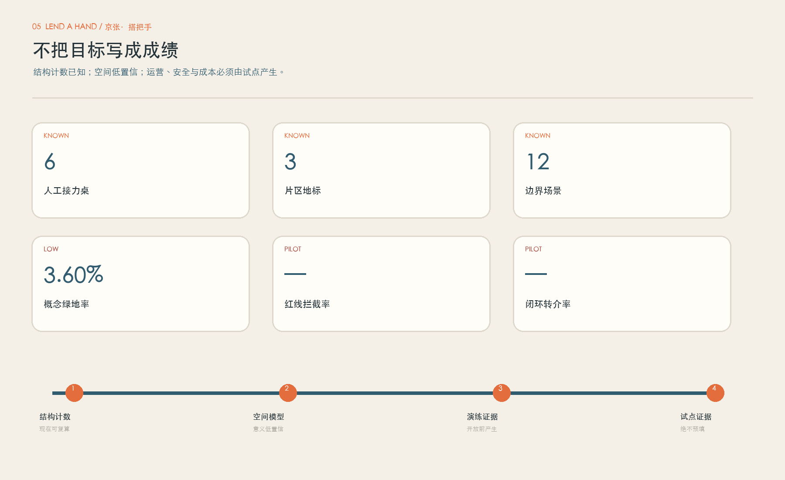
本页不是用十张图代替机器文件；图、正文、矩阵、GeoJSON 和 PDF 互相指向同一套主张。任务覆盖由仓库内结构化矩阵逐项审查。
最终结果只以提交包根目录 self_check.json 为准；每次修改视觉页后必须刷新 manifest 哈希并重跑四门。本页显示检查范围，不伪造独立审核或官方认可。
来源按“可用于正式方案、仅作背景、仅作临时几何”分级。详情、使用限制和检索记录写入 sources.json；网页只给读者一条清楚的证据路径。
边界和重点区为临时粗略几何；控规、权属、现状建筑、道路、市政、文保、无障碍、运营主体、工资、保险、数据责任与场地协议均待确认。官方空间数据到位后必须替换几何、重算三项核心指标并重审图纸。
这是智能体生成的概念建议，不是审定规划；不代表政府部门、产权人、运营机构、保险方或社区已经批准、出资、雇佣、投保、开放场地或承诺服务。